Algebra I — Symbolic fluency
Functions, equations and quadratics. This guide contains 57 chapter-level worked lessons, review questions, answers, and linked illustrations.
Contents — select a chapter
Linear model from points
Compute m using two points, then b=y−mx.
Points (0,3),(2,7) yield y=2x+3.
- Slope (7−3)/(2−0)=2
- At x=0 intercept 3.
Find slope through (−1,2),(3,10).
Hint: Rise 8 and run 4.
Show answer and verify
2
Check the units, inputs and intermediate steps. Different solution methods may be valid.
Factoring quadratics
Find factors whose product is c and sum is b in x²+bx+c.
x²+5x+6=(x+2)(x+3).
- 2×3=6
- 2+3=5
- Write factors.
For x²+7x+12=0, what is the positive magnitude of smaller root?
Hint: Factors (x+3)(x+4).
Show answer and verify
3
Check the units, inputs and intermediate steps. Different solution methods may be valid.
Quadratic formula
For ax²+bx+c=0 use x=(−b±√(b²−4ac))/(2a).
x²−5x+6=0 has roots 2 and 3.
- a=1,b=−5,c=6
- Discriminant 25−24=1
- Roots (5±1)/2.
For x²−9=0, enter positive root.
Hint: Solve x²=9.
Show answer and verify
3
Check the units, inputs and intermediate steps. Different solution methods may be valid.
Vertex form
A parabola y=a(x−h)²+k has vertex (h,k).
y=2(x−3)²+4 has vertex (3,4).
- Minimum squared term is zero at x=3
- y=4.
For y=(x+5)²−2, what is vertex x?
Hint: x+5=0 at the vertex.
Show answer and verify
-5
Check the units, inputs and intermediate steps. Different solution methods may be valid.
Absolute value equations
|x| is distance from zero; |x|=a has x=±a if a≥0.
|x−2|=5 yields x=7 or −3.
- Set x−2=+5 and x−2=−5
- Solve each.
What is positive solution of |x−4|=3?
Hint: Set inside equal to +3.
Show answer and verify
7
Check the units, inputs and intermediate steps. Different solution methods may be valid.
Rational expressions
Cancel common nonzero factors, while retaining excluded values.
(x²−9)/(x−3)=x+3, x≠3.
- Factor numerator (x−3)(x+3)
- Cancel
- Original excludes x=3.
Evaluate (x²−9)/(x−3) at x=5.
Hint: Factor first or substitute five.
Show answer and verify
8
Check the units, inputs and intermediate steps. Different solution methods may be valid.
Linear inequalities
Write compound constraints and use intervals.
2x+1≤9 gives x≤4.
- Subtract 1
- Divide by 2.
For 3x−6>0, what is the smallest integer x?
Hint: Strictly greater than two.
Show answer and verify
3
Check the units, inputs and intermediate steps. Different solution methods may be valid.
Function composition
(f∘g)(x)=f(g(x)); evaluate inside function first.
f(x)=2x+1,g(x)=x²; (f∘g)(3)=19.
- g(3)=9
- f(9)=19.
f(x)=x+4,g(x)=2x. Find f(g(5)).
Hint: g(5)=10 then add four.
Show answer and verify
14
Check the units, inputs and intermediate steps. Different solution methods may be valid.
Exponential growth
A repeated growth factor produces a·b^t.
100 grows 10% twice: 100(1.1)²=121.
- Growth factor 1.1
- Multiply twice.
200 grows 5% for 2 periods. Find final value.
Hint: 200×1.05².
Show answer and verify
220.5
Check the units, inputs and intermediate steps. Different solution methods may be valid.
Direct and inverse variation
Direct variation y=kx; inverse variation y=k/x for nonzero x.
If y=3x then at x=7, y=21.
- Identify k=3
- Multiply by x.
If y=24/x, find y at x=6.
Hint: Divide 24 by six.
Show answer and verify
4
Check the units, inputs and intermediate steps. Different solution methods may be valid.
Variables and expression evaluation
Variables and expression evaluation: Undo operations in reverse order and perform the same operation on both sides. An equation represents equality, so balanced transformations preserve its solution.
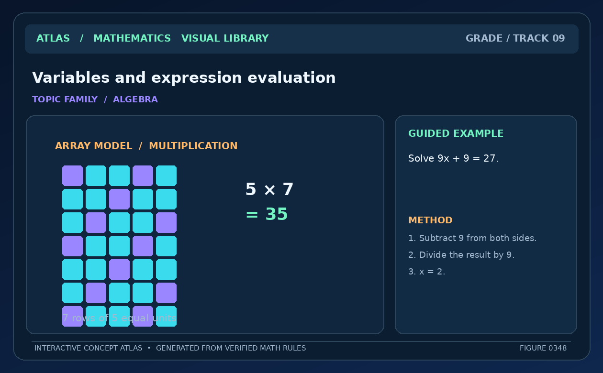
Solve 9x + 9 = 27.
- Subtract 9 from both sides.
- Divide the result by 9.
- x = 2.
Solve 9x + 9 = 45. Enter x.
Hint: Undo addition and then multiplication.
Show answer and verify
4
Check the units, inputs and intermediate steps. Different solution methods may be valid.
Algebraic identities
Algebraic identities: Undo operations in reverse order and perform the same operation on both sides. An equation represents equality, so balanced transformations preserve its solution.
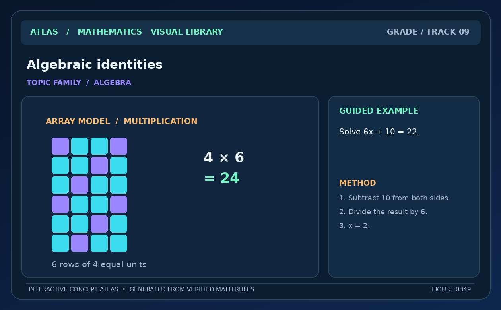
Solve 6x + 10 = 22.
- Subtract 10 from both sides.
- Divide the result by 6.
- x = 2.
Solve 10x + 6 = 46. Enter x.
Hint: Undo addition and then multiplication.
Show answer and verify
4
Check the units, inputs and intermediate steps. Different solution methods may be valid.
Properties of equality
Properties of equality: Undo operations in reverse order and perform the same operation on both sides. An equation represents equality, so balanced transformations preserve its solution.
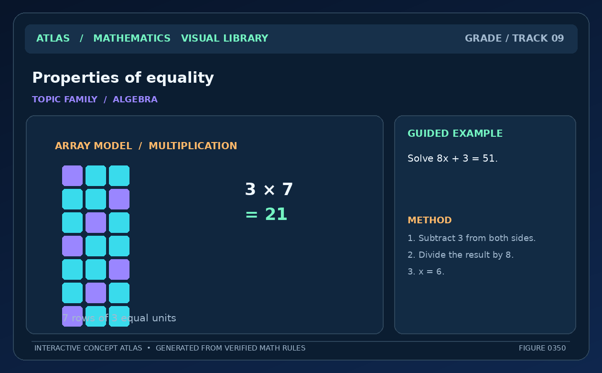
Solve 8x + 3 = 51.
- Subtract 3 from both sides.
- Divide the result by 8.
- x = 6.
Solve 3x + 8 = 32. Enter x.
Hint: Undo addition and then multiplication.
Show answer and verify
8
Check the units, inputs and intermediate steps. Different solution methods may be valid.
Multistep equation solving
Multistep equation solving: Undo operations in reverse order and perform the same operation on both sides. An equation represents equality, so balanced transformations preserve its solution.
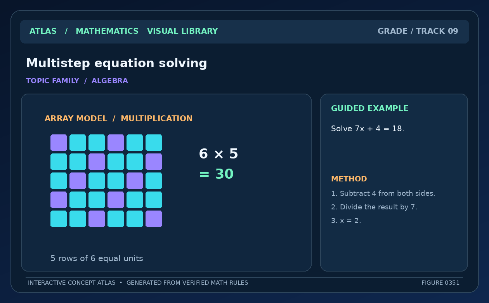
Solve 7x + 4 = 18.
- Subtract 4 from both sides.
- Divide the result by 7.
- x = 2.
Solve 4x + 7 = 23. Enter x.
Hint: Undo addition and then multiplication.
Show answer and verify
4
Check the units, inputs and intermediate steps. Different solution methods may be valid.
Literal equations
Literal equations: Undo operations in reverse order and perform the same operation on both sides. An equation represents equality, so balanced transformations preserve its solution.
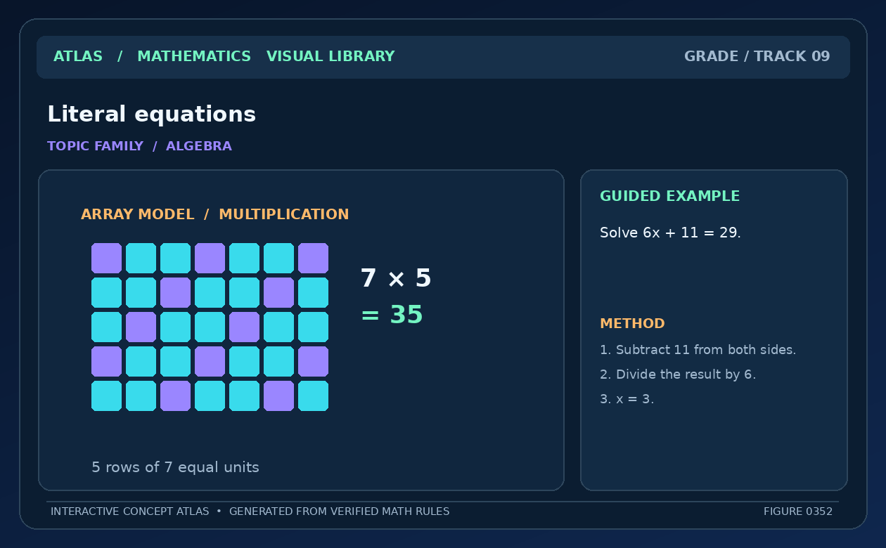
Solve 6x + 11 = 29.
- Subtract 11 from both sides.
- Divide the result by 6.
- x = 3.
Solve 11x + 6 = 61. Enter x.
Hint: Undo addition and then multiplication.
Show answer and verify
5
Check the units, inputs and intermediate steps. Different solution methods may be valid.
Equations with fractions
Equations with fractions: Undo operations in reverse order and perform the same operation on both sides. An equation represents equality, so balanced transformations preserve its solution.
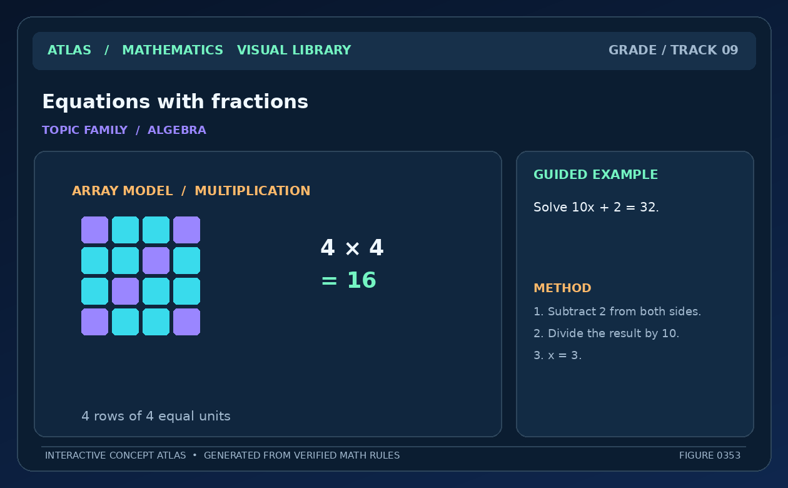
Solve 10x + 2 = 32.
- Subtract 2 from both sides.
- Divide the result by 10.
- x = 3.
Solve 2x + 10 = 20. Enter x.
Hint: Undo addition and then multiplication.
Show answer and verify
5
Check the units, inputs and intermediate steps. Different solution methods may be valid.
Inequalities in one variable
Inequalities in one variable: Undo operations in reverse order and perform the same operation on both sides. An equation represents equality, so balanced transformations preserve its solution.
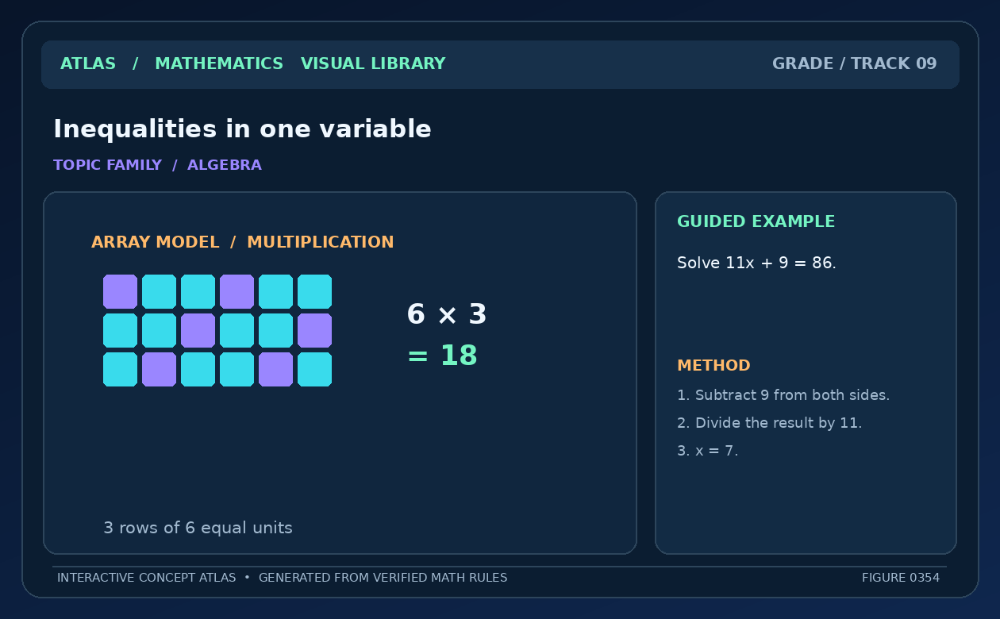
Solve 11x + 9 = 86.
- Subtract 9 from both sides.
- Divide the result by 11.
- x = 7.
Solve 9x + 11 = 92. Enter x.
Hint: Undo addition and then multiplication.
Show answer and verify
9
Check the units, inputs and intermediate steps. Different solution methods may be valid.
Absolute-value equations
Absolute-value equations: Undo operations in reverse order and perform the same operation on both sides. An equation represents equality, so balanced transformations preserve its solution.
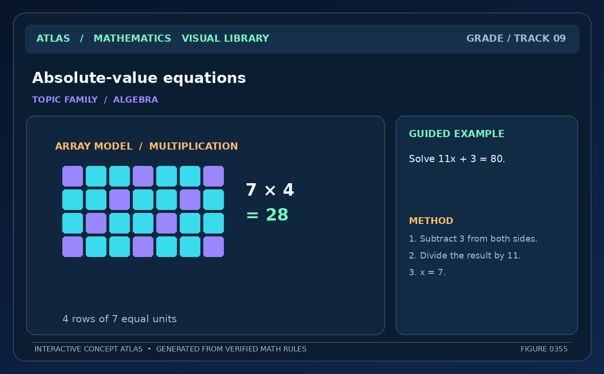
Solve 11x + 3 = 80.
- Subtract 3 from both sides.
- Divide the result by 11.
- x = 7.
Solve 3x + 11 = 38. Enter x.
Hint: Undo addition and then multiplication.
Show answer and verify
9
Check the units, inputs and intermediate steps. Different solution methods may be valid.
Absolute-value inequalities
Absolute-value inequalities: Undo operations in reverse order and perform the same operation on both sides. An equation represents equality, so balanced transformations preserve its solution.
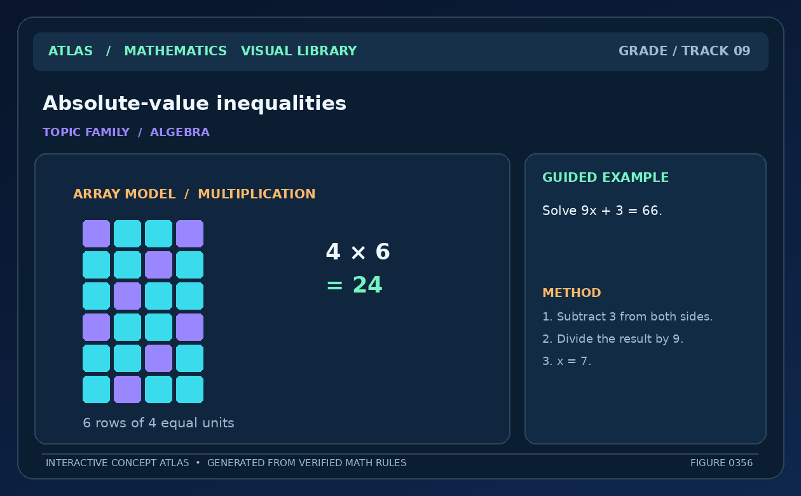
Solve 9x + 3 = 66.
- Subtract 3 from both sides.
- Divide the result by 9.
- x = 7.
Solve 3x + 9 = 36. Enter x.
Hint: Undo addition and then multiplication.
Show answer and verify
9
Check the units, inputs and intermediate steps. Different solution methods may be valid.
Function inputs and outputs
Function inputs and outputs: Undo operations in reverse order and perform the same operation on both sides. An equation represents equality, so balanced transformations preserve its solution.
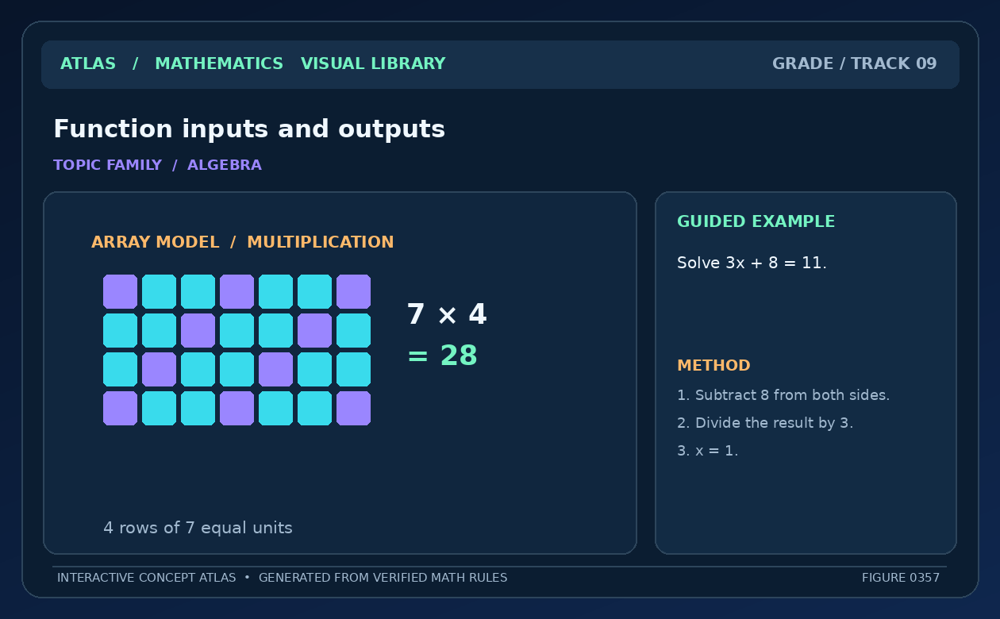
Solve 3x + 8 = 11.
- Subtract 8 from both sides.
- Divide the result by 3.
- x = 1.
Solve 8x + 3 = 27. Enter x.
Hint: Undo addition and then multiplication.
Show answer and verify
3
Check the units, inputs and intermediate steps. Different solution methods may be valid.
Function domain and range
Function domain and range: Undo operations in reverse order and perform the same operation on both sides. An equation represents equality, so balanced transformations preserve its solution.
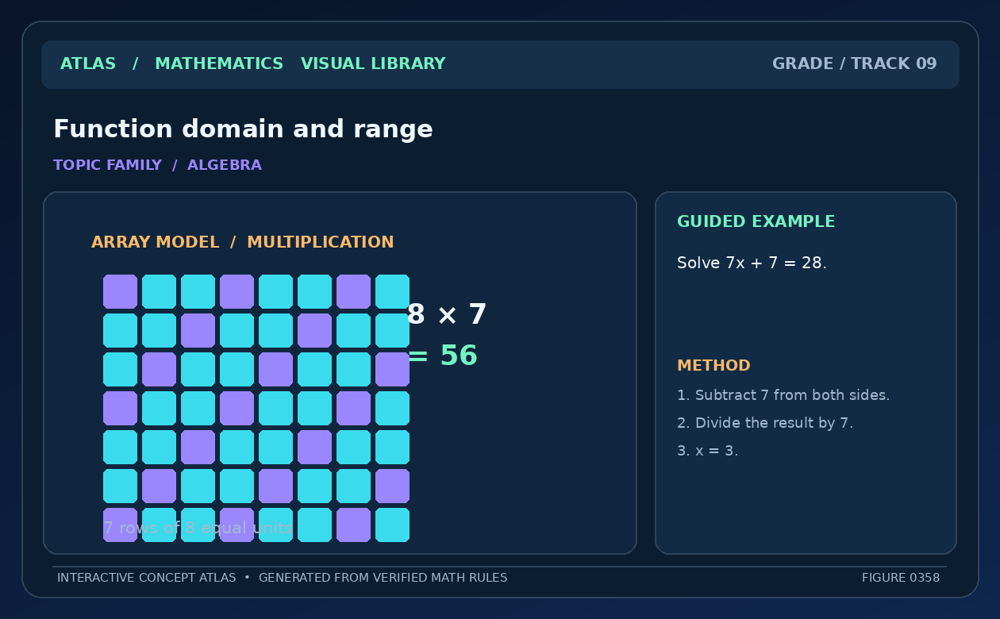
Solve 7x + 7 = 28.
- Subtract 7 from both sides.
- Divide the result by 7.
- x = 3.
Solve 7x + 7 = 42. Enter x.
Hint: Undo addition and then multiplication.
Show answer and verify
5
Check the units, inputs and intermediate steps. Different solution methods may be valid.
Function composition introduction
Function composition introduction: Undo operations in reverse order and perform the same operation on both sides. An equation represents equality, so balanced transformations preserve its solution.
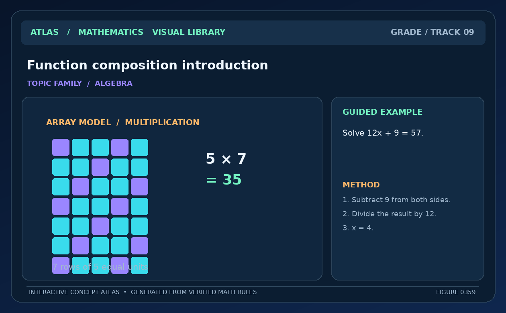
Solve 12x + 9 = 57.
- Subtract 9 from both sides.
- Divide the result by 12.
- x = 4.
Solve 9x + 12 = 66. Enter x.
Hint: Undo addition and then multiplication.
Show answer and verify
6
Check the units, inputs and intermediate steps. Different solution methods may be valid.
Graphing linear functions
Graphing linear functions: In y=mx+b, m describes constant slope and b describes initial value. Slope is change in y divided by the corresponding change in x.
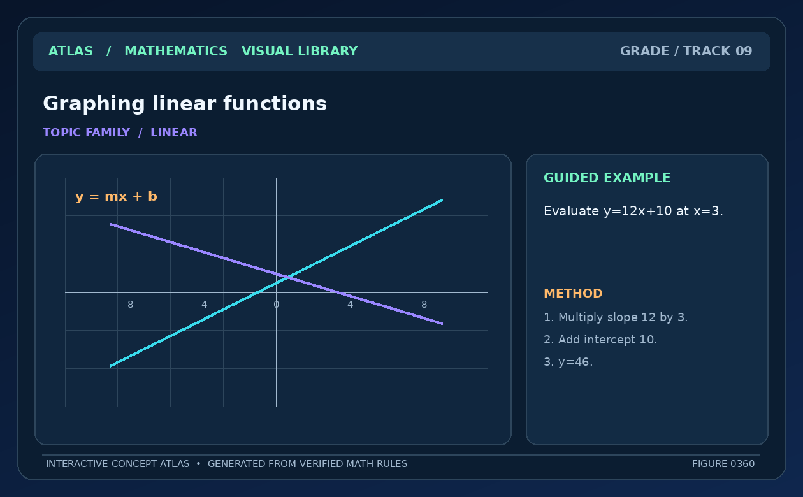
Evaluate y=12x+10 at x=3.
- Multiply slope 12 by 3.
- Add intercept 10.
- y=46.
In y=10x+12, what is y at x=4?
Hint: Substitute x, multiply by slope, then add intercept.
Show answer and verify
52
Check the units, inputs and intermediate steps. Different solution methods may be valid.
Intercept form
Intercept form: In y=mx+b, m describes constant slope and b describes initial value. Slope is change in y divided by the corresponding change in x.
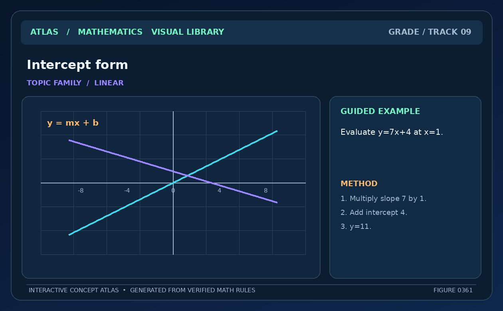
Evaluate y=7x+4 at x=1.
- Multiply slope 7 by 1.
- Add intercept 4.
- y=11.
In y=4x+7, what is y at x=2?
Hint: Substitute x, multiply by slope, then add intercept.
Show answer and verify
15
Check the units, inputs and intermediate steps. Different solution methods may be valid.
Point-slope form
Point-slope form: In y=mx+b, m describes constant slope and b describes initial value. Slope is change in y divided by the corresponding change in x.
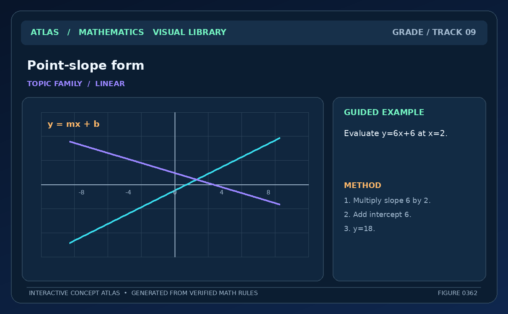
Evaluate y=6x+6 at x=2.
- Multiply slope 6 by 2.
- Add intercept 6.
- y=18.
In y=6x+6, what is y at x=3?
Hint: Substitute x, multiply by slope, then add intercept.
Show answer and verify
24
Check the units, inputs and intermediate steps. Different solution methods may be valid.
Parallel lines
Parallel lines: In y=mx+b, m describes constant slope and b describes initial value. Slope is change in y divided by the corresponding change in x.
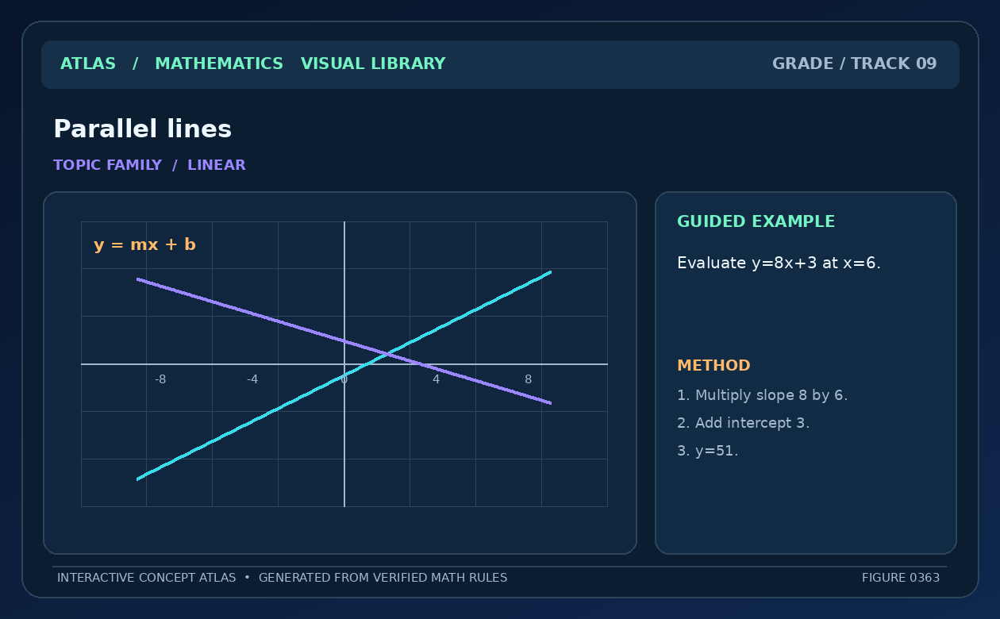
Evaluate y=8x+3 at x=6.
- Multiply slope 8 by 6.
- Add intercept 3.
- y=51.
In y=3x+8, what is y at x=7?
Hint: Substitute x, multiply by slope, then add intercept.
Show answer and verify
29
Check the units, inputs and intermediate steps. Different solution methods may be valid.
Perpendicular lines
Perpendicular lines: In y=mx+b, m describes constant slope and b describes initial value. Slope is change in y divided by the corresponding change in x.
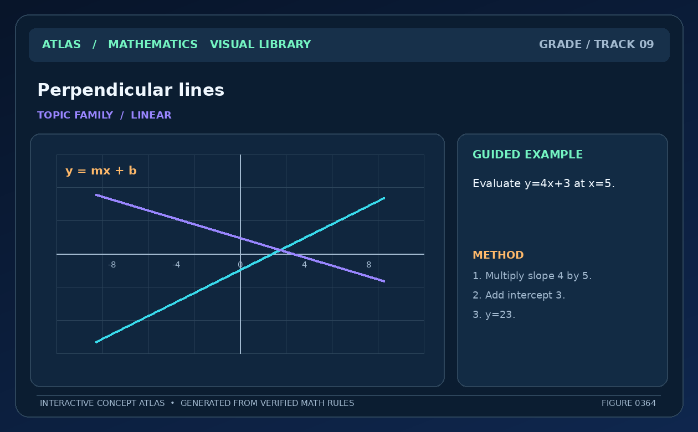
Evaluate y=4x+3 at x=5.
- Multiply slope 4 by 5.
- Add intercept 3.
- y=23.
In y=3x+4, what is y at x=6?
Hint: Substitute x, multiply by slope, then add intercept.
Show answer and verify
22
Check the units, inputs and intermediate steps. Different solution methods may be valid.
Systems by graphing
Systems by graphing: In y=mx+b, m describes constant slope and b describes initial value. Slope is change in y divided by the corresponding change in x.
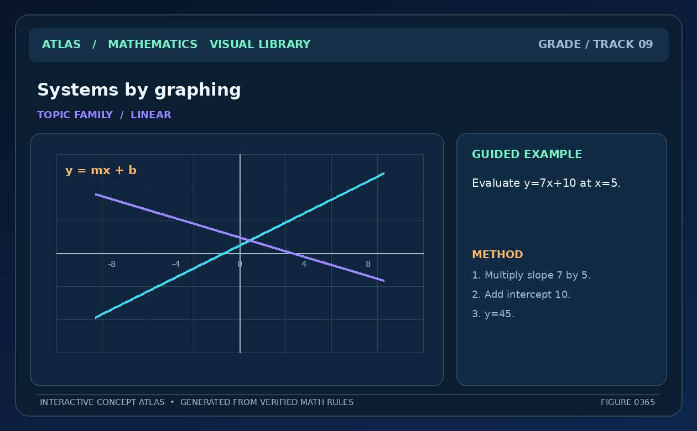
Evaluate y=7x+10 at x=5.
- Multiply slope 7 by 5.
- Add intercept 10.
- y=45.
In y=10x+7, what is y at x=6?
Hint: Substitute x, multiply by slope, then add intercept.
Show answer and verify
67
Check the units, inputs and intermediate steps. Different solution methods may be valid.
Systems by elimination
Systems by elimination: In y=mx+b, m describes constant slope and b describes initial value. Slope is change in y divided by the corresponding change in x.
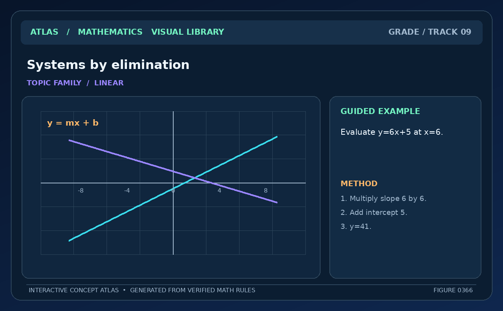
Evaluate y=6x+5 at x=6.
- Multiply slope 6 by 6.
- Add intercept 5.
- y=41.
In y=5x+6, what is y at x=7?
Hint: Substitute x, multiply by slope, then add intercept.
Show answer and verify
41
Check the units, inputs and intermediate steps. Different solution methods may be valid.
Systems by substitution
Systems by substitution: In y=mx+b, m describes constant slope and b describes initial value. Slope is change in y divided by the corresponding change in x.
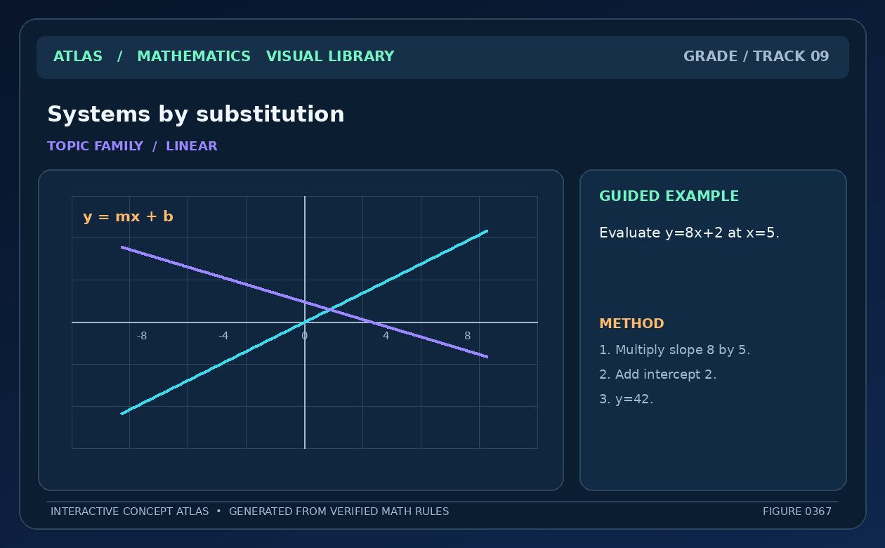
Evaluate y=8x+2 at x=5.
- Multiply slope 8 by 5.
- Add intercept 2.
- y=42.
In y=2x+8, what is y at x=6?
Hint: Substitute x, multiply by slope, then add intercept.
Show answer and verify
20
Check the units, inputs and intermediate steps. Different solution methods may be valid.
Mixture word problems
Mixture word problems: In y=mx+b, m describes constant slope and b describes initial value. Slope is change in y divided by the corresponding change in x.
Evaluate y=7x+3 at x=5.
- Multiply slope 7 by 5.
- Add intercept 3.
- y=38.
In y=3x+7, what is y at x=6?
Hint: Substitute x, multiply by slope, then add intercept.
Show answer and verify
25
Check the units, inputs and intermediate steps. Different solution methods may be valid.
Distance-rate-time models
Distance-rate-time models: In y=mx+b, m describes constant slope and b describes initial value. Slope is change in y divided by the corresponding change in x.
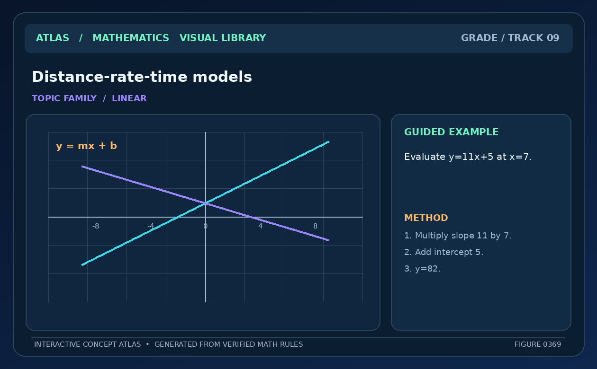
Evaluate y=11x+5 at x=7.
- Multiply slope 11 by 7.
- Add intercept 5.
- y=82.
In y=5x+11, what is y at x=8?
Hint: Substitute x, multiply by slope, then add intercept.
Show answer and verify
51
Check the units, inputs and intermediate steps. Different solution methods may be valid.
Linear regression introduction
Linear regression introduction: In y=mx+b, m describes constant slope and b describes initial value. Slope is change in y divided by the corresponding change in x.
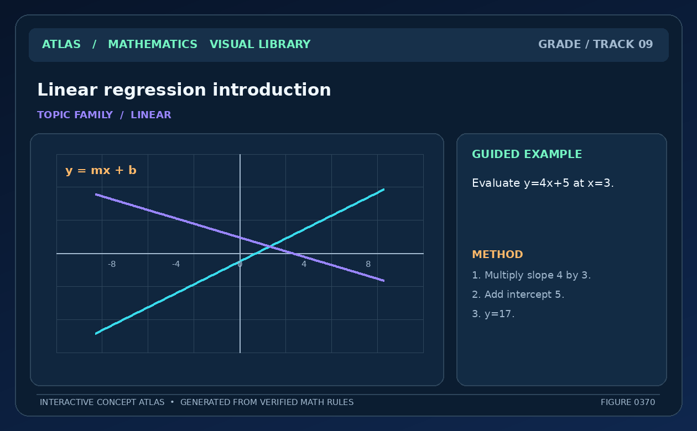
Evaluate y=4x+5 at x=3.
- Multiply slope 4 by 3.
- Add intercept 5.
- y=17.
In y=5x+4, what is y at x=4?
Hint: Substitute x, multiply by slope, then add intercept.
Show answer and verify
24
Check the units, inputs and intermediate steps. Different solution methods may be valid.
Piecewise linear graphs
Piecewise linear graphs: In y=mx+b, m describes constant slope and b describes initial value. Slope is change in y divided by the corresponding change in x.
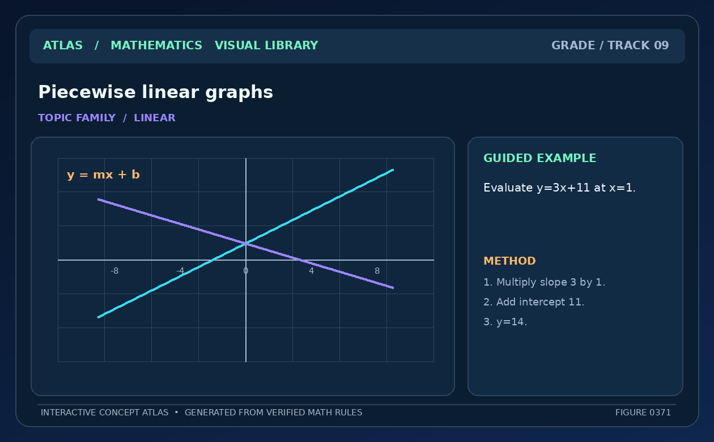
Evaluate y=3x+11 at x=1.
- Multiply slope 3 by 1.
- Add intercept 11.
- y=14.
In y=11x+3, what is y at x=2?
Hint: Substitute x, multiply by slope, then add intercept.
Show answer and verify
25
Check the units, inputs and intermediate steps. Different solution methods may be valid.
Exponential expression rules
Exponential expression rules: Exponents count repeated multiplication; use exponent laws only for compatible bases. For nonzero a, a^m × a^n = a^(m+n).
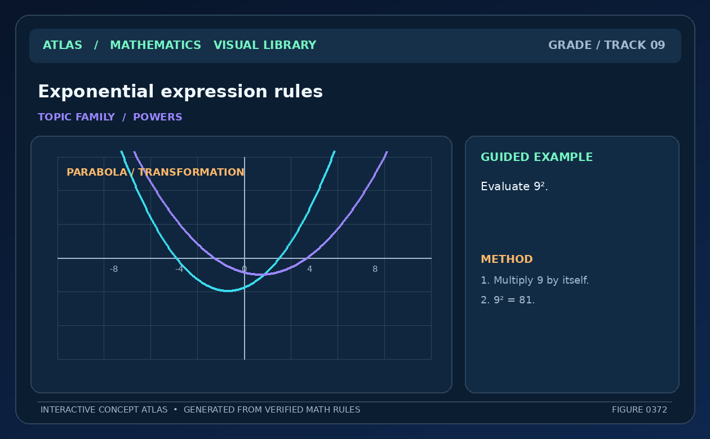
Evaluate 9².
- Multiply 9 by itself.
- 9² = 81.
Calculate 2³.
Hint: Cube means multiply the base three times.
Show answer and verify
8
Check the units, inputs and intermediate steps. Different solution methods may be valid.
Negative exponent simplification
Negative exponent simplification: Exponents count repeated multiplication; use exponent laws only for compatible bases. For nonzero a, a^m × a^n = a^(m+n).
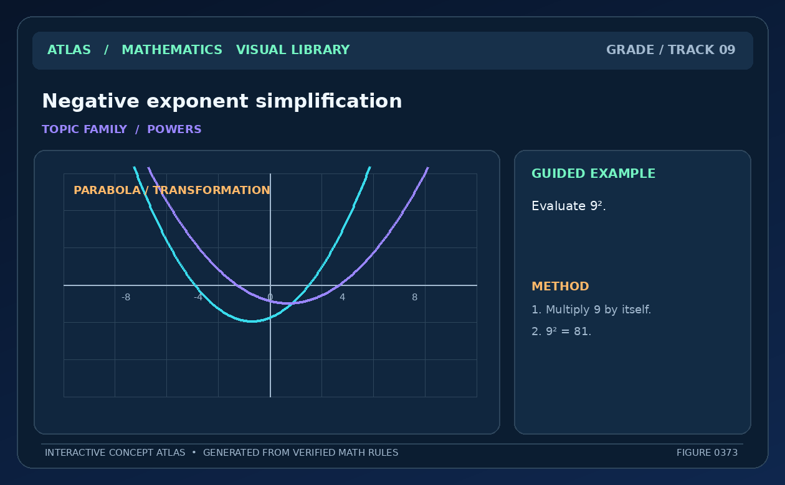
Evaluate 9².
- Multiply 9 by itself.
- 9² = 81.
Calculate 3³.
Hint: Cube means multiply the base three times.
Show answer and verify
27
Check the units, inputs and intermediate steps. Different solution methods may be valid.
Radical expressions
Radical expressions: Exponents count repeated multiplication; use exponent laws only for compatible bases. For nonzero a, a^m × a^n = a^(m+n).
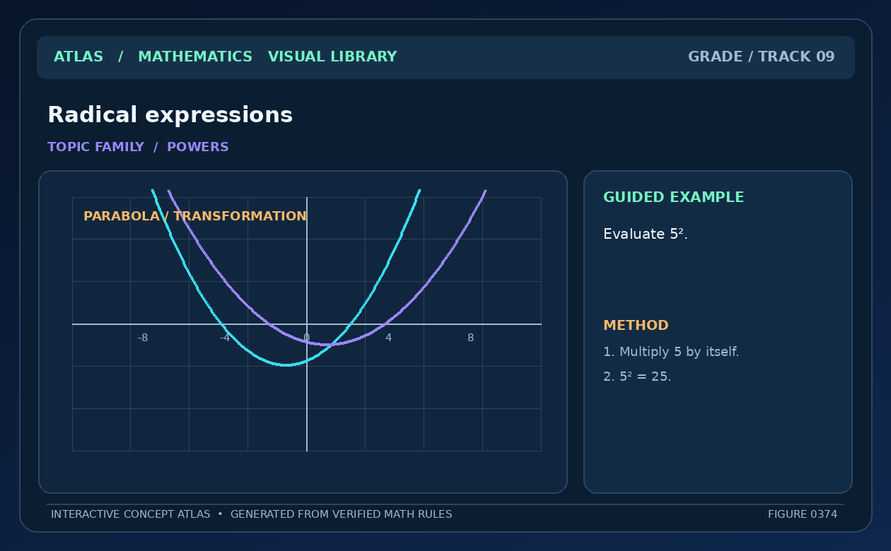
Evaluate 5².
- Multiply 5 by itself.
- 5² = 25.
Calculate 2³.
Hint: Cube means multiply the base three times.
Show answer and verify
8
Check the units, inputs and intermediate steps. Different solution methods may be valid.
Rational exponent introduction
Rational exponent introduction: Exponents count repeated multiplication; use exponent laws only for compatible bases. For nonzero a, a^m × a^n = a^(m+n).
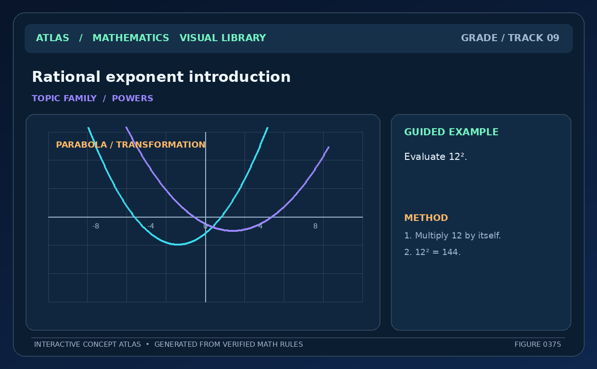
Evaluate 12².
- Multiply 12 by itself.
- 12² = 144.
Calculate 8³.
Hint: Cube means multiply the base three times.
Show answer and verify
512
Check the units, inputs and intermediate steps. Different solution methods may be valid.
Adding and subtracting polynomials
Adding and subtracting polynomials: Group like powers and apply exponent and factorization rules. A polynomial is a finite sum of nonnegative integer powers of a variable.
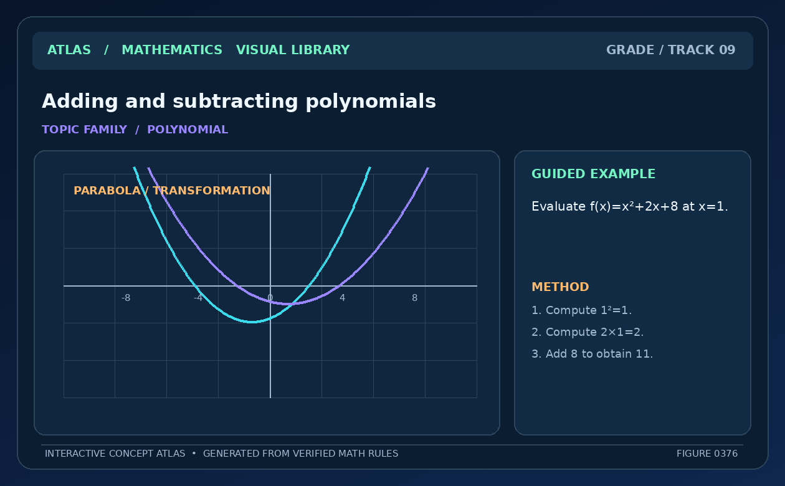
Evaluate f(x)=x²+2x+8 at x=1.
- Compute 1²=1.
- Compute 2×1=2.
- Add 8 to obtain 11.
Find f(2) for f(x)=x²+2x+8.
Hint: Square x first, multiply coefficient, then add.
Show answer and verify
16
Check the units, inputs and intermediate steps. Different solution methods may be valid.
Multiplying monomials
Multiplying monomials: Group like powers and apply exponent and factorization rules. A polynomial is a finite sum of nonnegative integer powers of a variable.
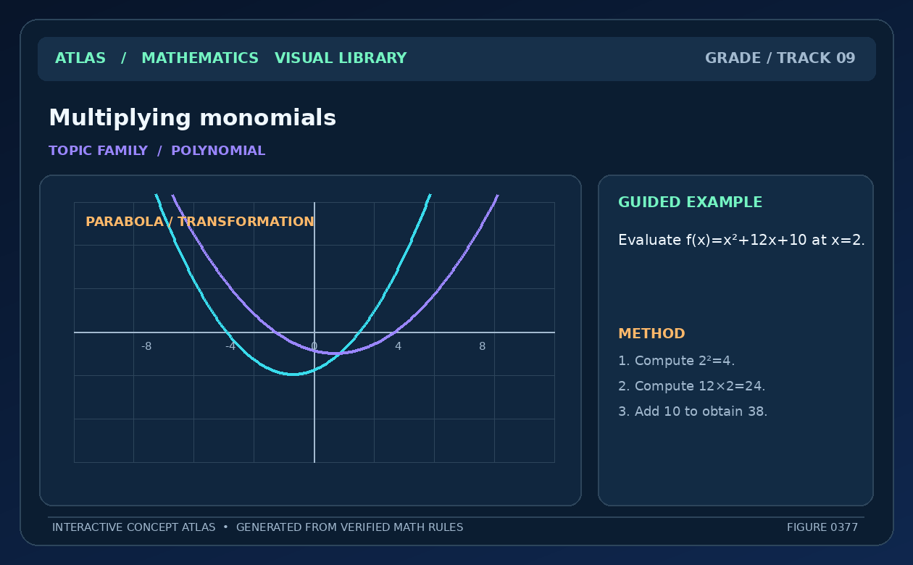
Evaluate f(x)=x²+12x+10 at x=2.
- Compute 2²=4.
- Compute 12×2=24.
- Add 10 to obtain 38.
Find f(3) for f(x)=x²+12x+10.
Hint: Square x first, multiply coefficient, then add.
Show answer and verify
55
Check the units, inputs and intermediate steps. Different solution methods may be valid.
Multiplying binomials
Multiplying binomials: Group like powers and apply exponent and factorization rules. A polynomial is a finite sum of nonnegative integer powers of a variable.
Evaluate f(x)=x²+6x+4 at x=2.
- Compute 2²=4.
- Compute 6×2=12.
- Add 4 to obtain 20.
Find f(3) for f(x)=x²+6x+4.
Hint: Square x first, multiply coefficient, then add.
Show answer and verify
31
Check the units, inputs and intermediate steps. Different solution methods may be valid.
FOIL distributive methods
FOIL distributive methods: Group like powers and apply exponent and factorization rules. A polynomial is a finite sum of nonnegative integer powers of a variable.
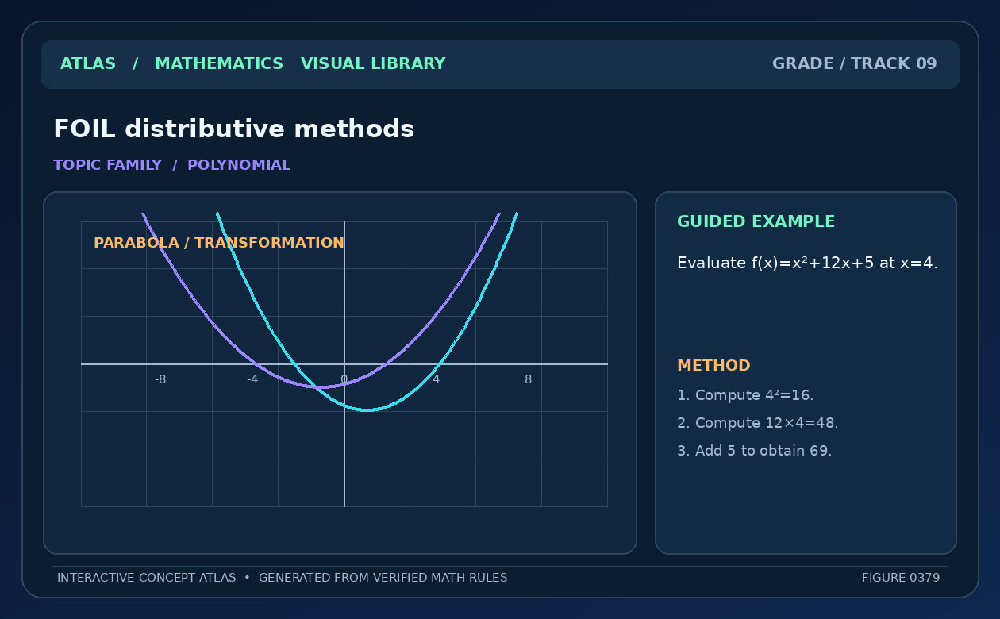
Evaluate f(x)=x²+12x+5 at x=4.
- Compute 4²=16.
- Compute 12×4=48.
- Add 5 to obtain 69.
Find f(5) for f(x)=x²+12x+5.
Hint: Square x first, multiply coefficient, then add.
Show answer and verify
90
Check the units, inputs and intermediate steps. Different solution methods may be valid.
Factoring a GCF
Factoring a GCF: Group like powers and apply exponent and factorization rules. A polynomial is a finite sum of nonnegative integer powers of a variable.
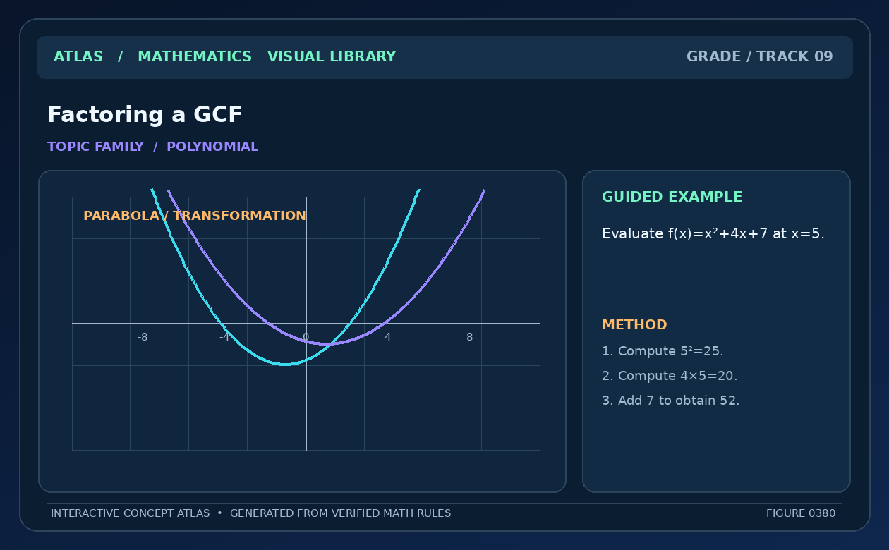
Evaluate f(x)=x²+4x+7 at x=5.
- Compute 5²=25.
- Compute 4×5=20.
- Add 7 to obtain 52.
Find f(6) for f(x)=x²+4x+7.
Hint: Square x first, multiply coefficient, then add.
Show answer and verify
67
Check the units, inputs and intermediate steps. Different solution methods may be valid.
Factoring trinomials
Factoring trinomials: Group like powers and apply exponent and factorization rules. A polynomial is a finite sum of nonnegative integer powers of a variable.
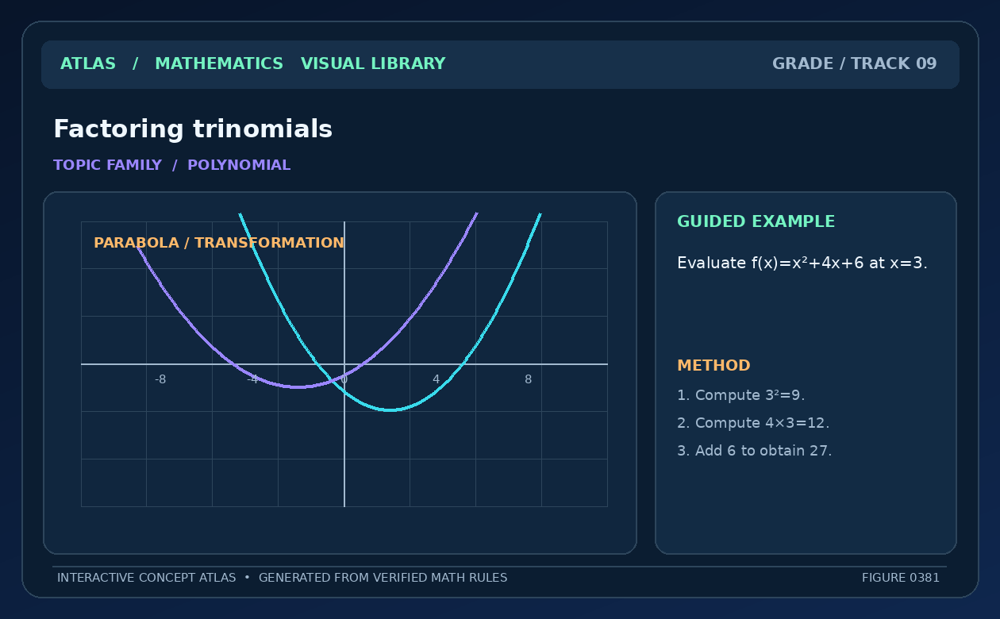
Evaluate f(x)=x²+4x+6 at x=3.
- Compute 3²=9.
- Compute 4×3=12.
- Add 6 to obtain 27.
Find f(4) for f(x)=x²+4x+6.
Hint: Square x first, multiply coefficient, then add.
Show answer and verify
38
Check the units, inputs and intermediate steps. Different solution methods may be valid.
Factoring difference of squares
Factoring difference of squares: Group like powers and apply exponent and factorization rules. A polynomial is a finite sum of nonnegative integer powers of a variable.
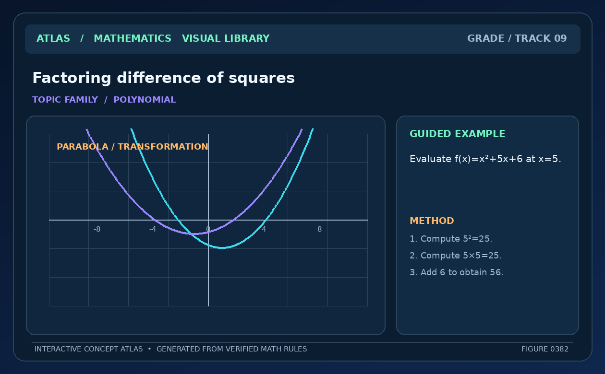
Evaluate f(x)=x²+5x+6 at x=5.
- Compute 5²=25.
- Compute 5×5=25.
- Add 6 to obtain 56.
Find f(6) for f(x)=x²+5x+6.
Hint: Square x first, multiply coefficient, then add.
Show answer and verify
72
Check the units, inputs and intermediate steps. Different solution methods may be valid.
Completing the square
Completing the square: Group like powers and apply exponent and factorization rules. A polynomial is a finite sum of nonnegative integer powers of a variable.
Evaluate f(x)=x²+4x+9 at x=4.
- Compute 4²=16.
- Compute 4×4=16.
- Add 9 to obtain 41.
Find f(5) for f(x)=x²+4x+9.
Hint: Square x first, multiply coefficient, then add.
Show answer and verify
54
Check the units, inputs and intermediate steps. Different solution methods may be valid.
Quadratic equation solutions
Quadratic equation solutions: For y=ax²+bx+c with a≠0, the axis of symmetry is x=−b/(2a). The sign of a determines whether the parabola opens up or down.
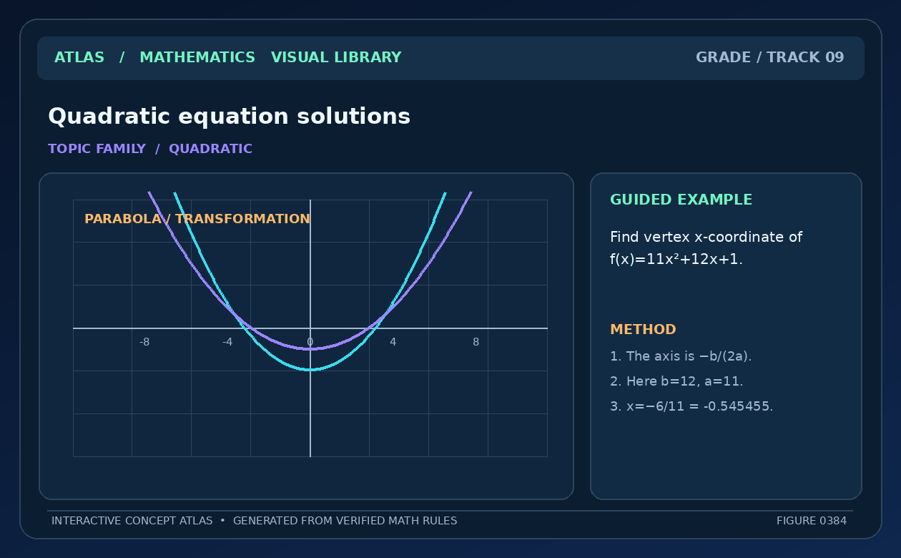
Find vertex x-coordinate of f(x)=11x²+12x+1.
- The axis is −b/(2a).
- Here b=12, a=11.
- x=−6/11 = -0.545455.
For f(x)=6x²+22x+1, find the vertex x-coordinate.
Hint: Use −b/(2a), not −b/a.
Show answer and verify
-1.8333333333333333
Check the units, inputs and intermediate steps. Different solution methods may be valid.
Quadratic graphs and vertices
Quadratic graphs and vertices: For y=ax²+bx+c with a≠0, the axis of symmetry is x=−b/(2a). The sign of a determines whether the parabola opens up or down.
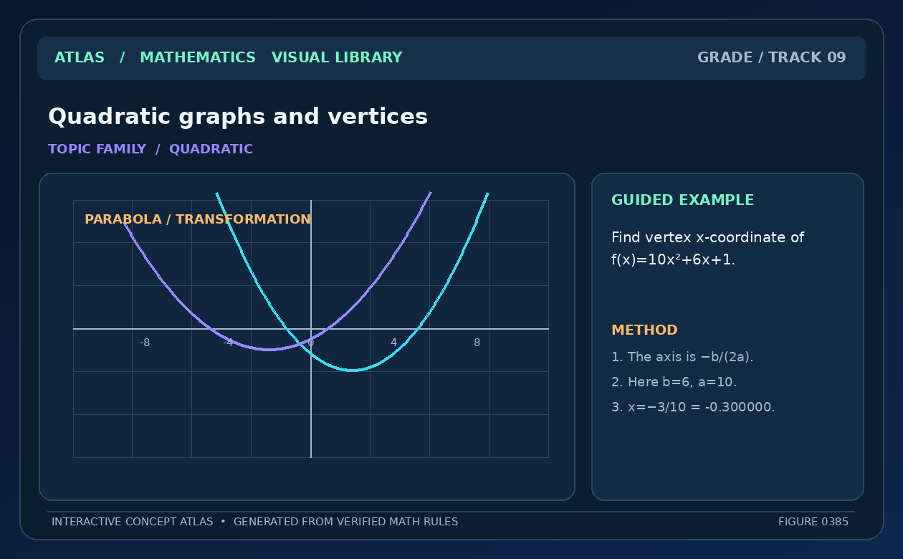
Find vertex x-coordinate of f(x)=10x²+6x+1.
- The axis is −b/(2a).
- Here b=6, a=10.
- x=−3/10 = -0.300000.
For f(x)=3x²+20x+1, find the vertex x-coordinate.
Hint: Use −b/(2a), not −b/a.
Show answer and verify
-3.3333333333333335
Check the units, inputs and intermediate steps. Different solution methods may be valid.
Factoring quadratic expressions
Factoring quadratic expressions: For y=ax²+bx+c with a≠0, the axis of symmetry is x=−b/(2a). The sign of a determines whether the parabola opens up or down.
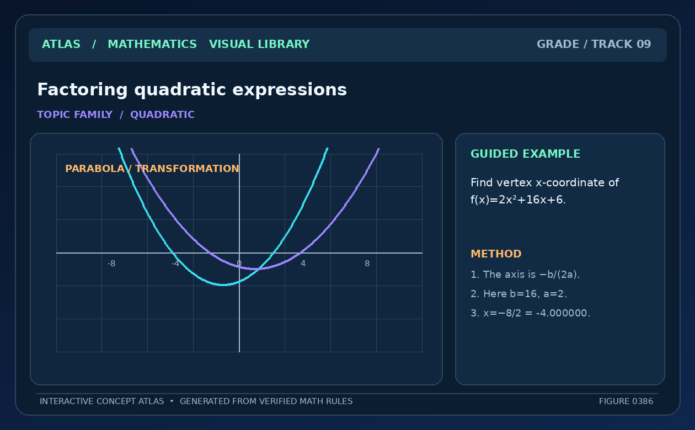
Find vertex x-coordinate of f(x)=2x²+16x+6.
- The axis is −b/(2a).
- Here b=16, a=2.
- x=−8/2 = -4.000000.
For f(x)=8x²+4x+6, find the vertex x-coordinate.
Hint: Use −b/(2a), not −b/a.
Show answer and verify
-0.25
Check the units, inputs and intermediate steps. Different solution methods may be valid.
Quadratic discriminant
Quadratic discriminant: For y=ax²+bx+c with a≠0, the axis of symmetry is x=−b/(2a). The sign of a determines whether the parabola opens up or down.
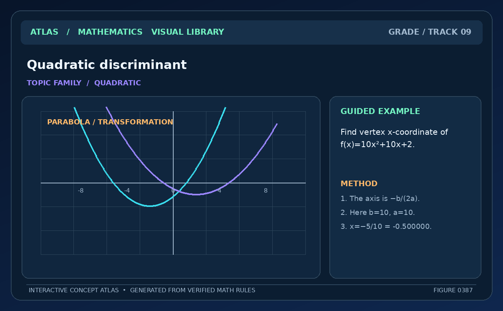
Find vertex x-coordinate of f(x)=10x²+10x+2.
- The axis is −b/(2a).
- Here b=10, a=10.
- x=−5/10 = -0.500000.
For f(x)=5x²+20x+2, find the vertex x-coordinate.
Hint: Use −b/(2a), not −b/a.
Show answer and verify
-2.0
Check the units, inputs and intermediate steps. Different solution methods may be valid.
Quadratic formula
Quadratic formula: For y=ax²+bx+c with a≠0, the axis of symmetry is x=−b/(2a). The sign of a determines whether the parabola opens up or down.
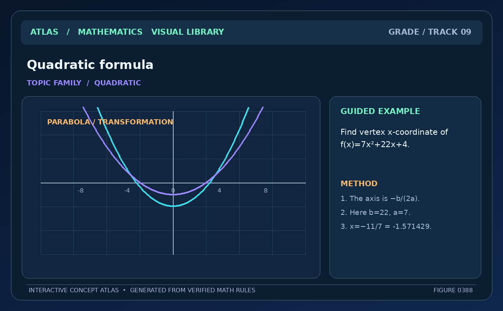
Find vertex x-coordinate of f(x)=7x²+22x+4.
- The axis is −b/(2a).
- Here b=22, a=7.
- x=−11/7 = -1.571429.
For f(x)=11x²+14x+4, find the vertex x-coordinate.
Hint: Use −b/(2a), not −b/a.
Show answer and verify
-0.6363636363636364
Check the units, inputs and intermediate steps. Different solution methods may be valid.
Maximum and minimum quadratic models
Maximum and minimum quadratic models: For y=ax²+bx+c with a≠0, the axis of symmetry is x=−b/(2a). The sign of a determines whether the parabola opens up or down.
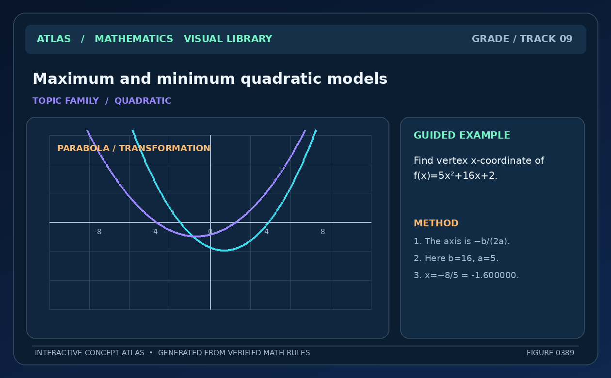
Find vertex x-coordinate of f(x)=5x²+16x+2.
- The axis is −b/(2a).
- Here b=16, a=5.
- x=−8/5 = -1.600000.
For f(x)=8x²+10x+2, find the vertex x-coordinate.
Hint: Use −b/(2a), not −b/a.
Show answer and verify
-0.625
Check the units, inputs and intermediate steps. Different solution methods may be valid.
Relative-frequency tables
Relative-frequency tables: Organize observations and distinguish measures of center from measures of spread. The mean is the total divided by the number of observations.
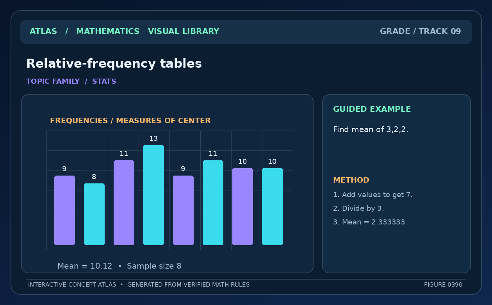
Find mean of 3,2,2.
- Add values to get 7.
- Divide by 3.
- Mean = 2.333333.
Mean of 3,5,7?
Hint: Sum observations and divide by count.
Show answer and verify
5
Check the units, inputs and intermediate steps. Different solution methods may be valid.
Describing bivariate data
Describing bivariate data: Organize observations and distinguish measures of center from measures of spread. The mean is the total divided by the number of observations.
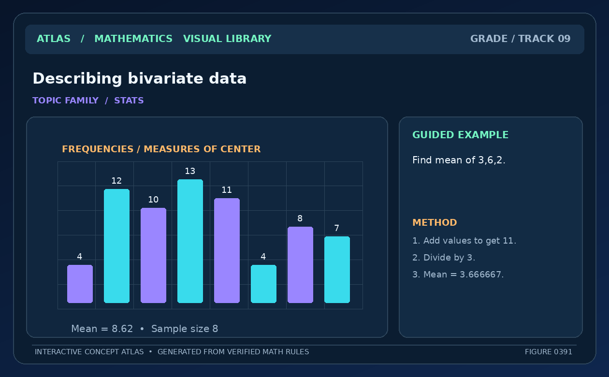
Find mean of 3,6,2.
- Add values to get 11.
- Divide by 3.
- Mean = 3.666667.
Mean of 3,5,7?
Hint: Sum observations and divide by count.
Show answer and verify
5
Check the units, inputs and intermediate steps. Different solution methods may be valid.
Comparing distributions
Comparing distributions: Organize observations and distinguish measures of center from measures of spread. The mean is the total divided by the number of observations.
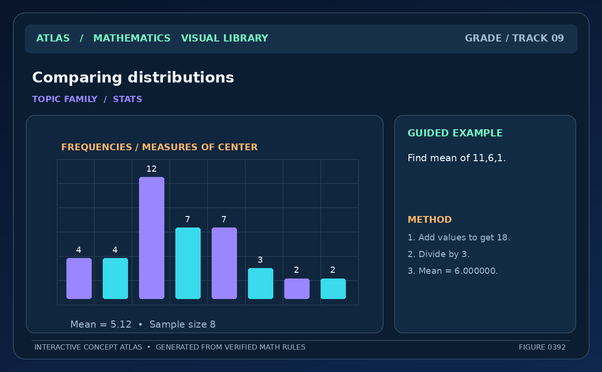
Find mean of 11,6,1.
- Add values to get 18.
- Divide by 3.
- Mean = 6.000000.
Mean of 11,13,15?
Hint: Sum observations and divide by count.
Show answer and verify
13
Check the units, inputs and intermediate steps. Different solution methods may be valid.
Income budgeting equations
Income budgeting equations: Convert a percentage to a decimal and write down the compounding period before computing. A loan APR and an investment APY are not automatically interchangeable.
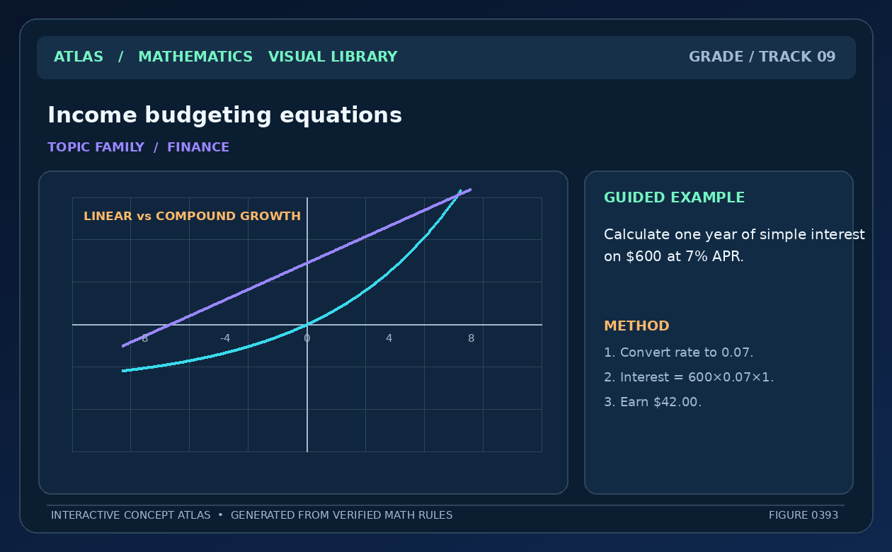
Calculate one year of simple interest on $600 at 7% APR.
- Convert rate to 0.07.
- Interest = 600×0.07×1.
- Earn $42.00.
Interest on $700 at 7% for one year?
Hint: Simple interest is principal × annual rate × time.
Show answer and verify
49
Check the units, inputs and intermediate steps. Different solution methods may be valid.
Annual simple interest word problems
Annual simple interest word problems: Convert a percentage to a decimal and write down the compounding period before computing. A loan APR and an investment APY are not automatically interchangeable.
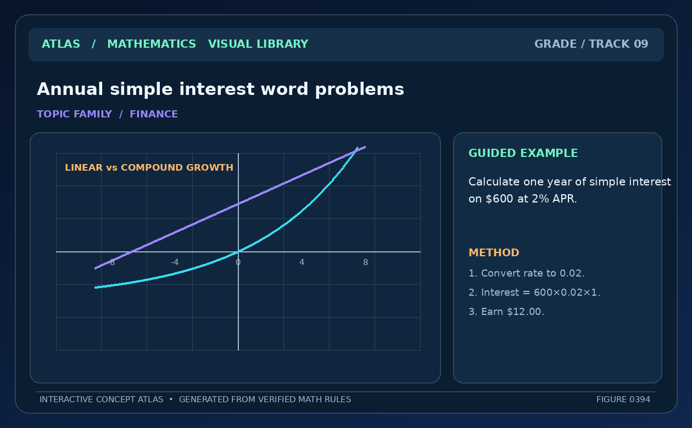
Calculate one year of simple interest on $600 at 2% APR.
- Convert rate to 0.02.
- Interest = 600×0.02×1.
- Earn $12.00.
Interest on $1000 at 2% for one year?
Hint: Simple interest is principal × annual rate × time.
Show answer and verify
20
Check the units, inputs and intermediate steps. Different solution methods may be valid.